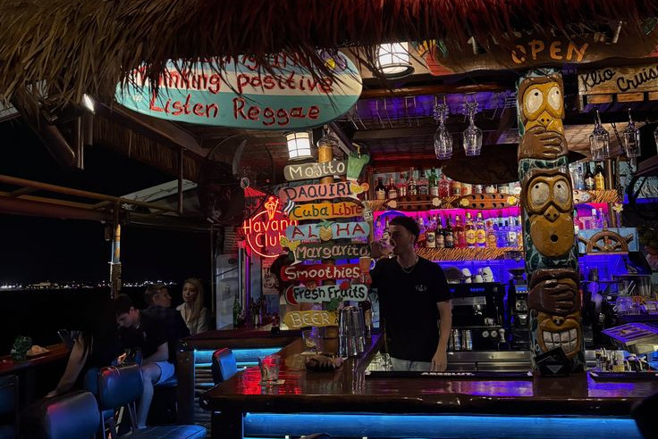
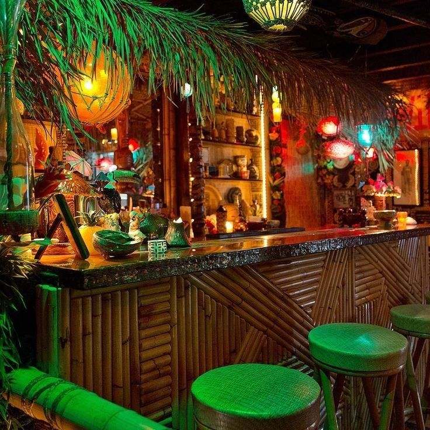
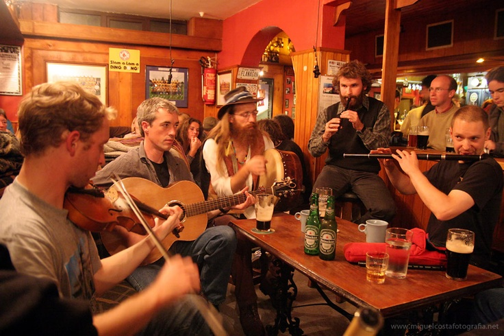

Hi Melody
O Hi Melody nasceu como um refúgio tropical onde música, mar e gastronomia se encontram. Criamos um espaço leve, vibrante e elegante para quem quer sentir a praia em cada detalhe — do primeiro drink ao último pôr do sol.
Nossa Vibe
Cada detalhe foi pensado para fluir como uma melodia: cores suaves, luz natural, brisa do mar e sons tropicais. O Hi Melody é descontraído, mas sofisticado — perfeito para relaxar, celebrar e criar memórias inesquecíveis à beira-mar.
Reservas
Garanta seu lugar no Hi Melody e viva a experiência tropical completa. Faça sua reserva e deixe a gente cuidar do resto — música, sabores e o melhor pôr do sol estão garantidos.
Raízes
O Hi Melody foi fundado por Jennifer Hueller, uma apaixonada por música, praia e gastronomia. A ideia surgiu após viagens por ilhas tropicais, onde percebeu que os melhores momentos eram simples: boa comida, boas pessoas e boa música. Ela decidiu criar um espaço que unisse tudo isso em uma única experiência sensorial.